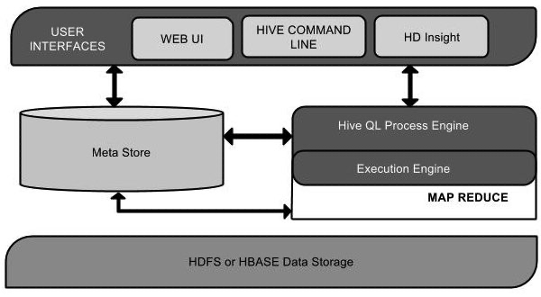
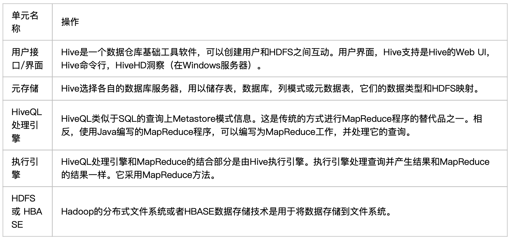
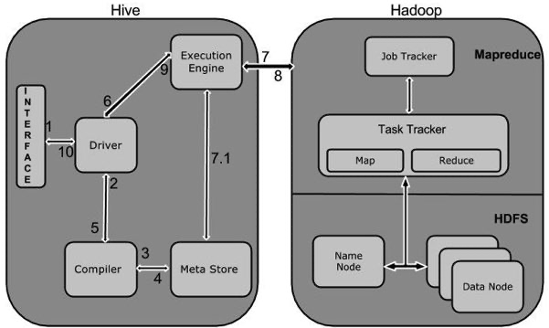
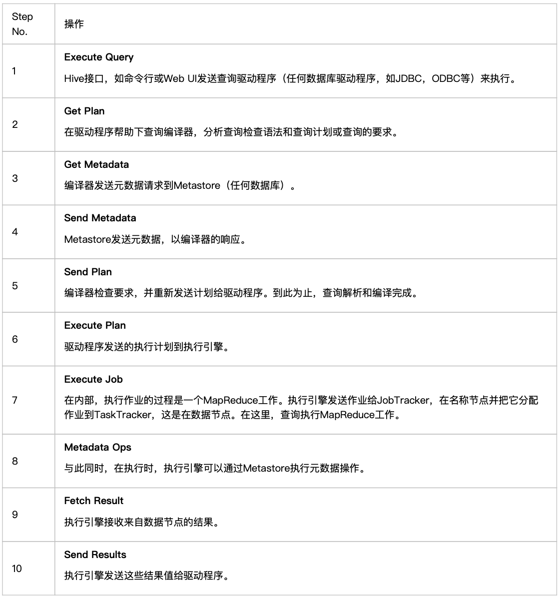

Hive 是什么
Hive 是一个数据仓库基础工具在 Hadoop 中用来处理结构化数据。它架构在 Hadoop 之上，总归为大数据，并使得查询和分析方便。
最初，Hive 是由 Facebook 开发，后来由 Apache 软件基金会开发，并作为进一步将它作为名义下 Apache Hive 为一个开源项目。它用在好多不同的公司。例如，亚马逊使用它在 Amazon Elastic MapReduce。
Hive 不是
- 一个关系数据库
- 一个设计用于联机事务处理（OLTP）
- 实时查询和行级更新的语言
Hive 特点
- 它存储架构在一个数据库中并处理数据到 HDFS。
- 它是专为 OLAP 设计。
- 它提供 SQL 类型语言查询叫 HiveQL 或 HQL。
- 它是熟知，快速，可扩展和可扩展的。
Hive 架构

该组件图包含不同的单元。下表描述每个单元：

Hive 工作原理
下图描述了 Hive 和 Hadoop 之间的工作流程。

下表定义 Hive 和 Hadoop 框架的交互方式：

执行过程就是：
HiveQL 通过 CLI/web UI 或者 thrift 、 odbc 或 jdbc 接口的外部接口提交，经过 complier 编译器，运用 Metastore 中的元数据进行类型检测和语法分析，生成一个逻辑方案(logical plan), 然后通过简单的优化处理，产生一个以有向无环图 DAG 数据结构形式展现的 map-reduce 任务。 Hive 构建在 Hadoop 之上，Hive 的执行原理：
HQL 中对查询语句的解释、优化、生成查询计划是由 Hive 完成的
所有的数据都是存储在 Hadoop 中
查询计划被转化为 MapReduce 任务，在 Hadoop 中执行（有些查询没有 MR 任务，如：select * from table）
Hadoop 和 Hive 都是用 UTF-8 编码的
查询编译器(query complier), 用云存储中的元数据来生成执行计划，步骤如下：
解析（parse）-anlr 解析其生成语法树 AST(hibernate 也是这个)：将 HQL 转化为抽象语法树 AST
类型检查和语法分析(type checking and semantic analysis): 将抽象语法树转换此查询块(query block tree), 并将查询块转换成逻辑查询计划(logic plan Generator);
优化(optimization): 重写查询计划(logical optimizer)–>将逻辑查询计划转成物理计划(physical plan generator)–>选择最佳的 join 策略(physical optimizer)
Hive 环境安装
注意：Hive 需要运行在 hadoop-master 节点才可以！